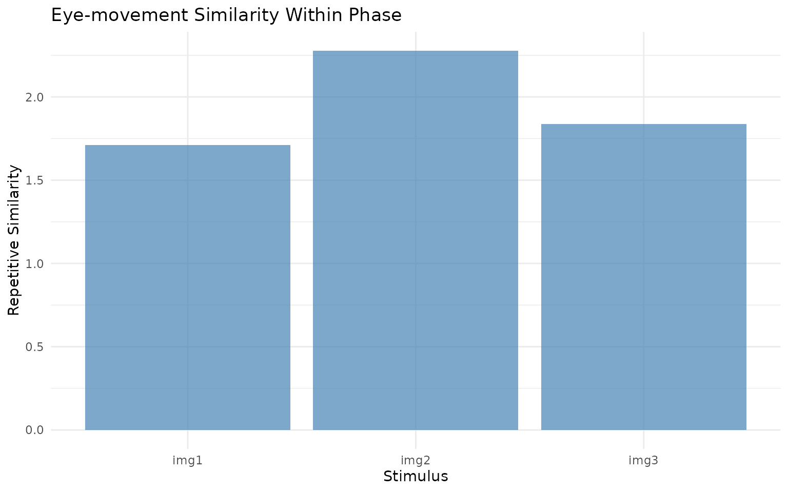
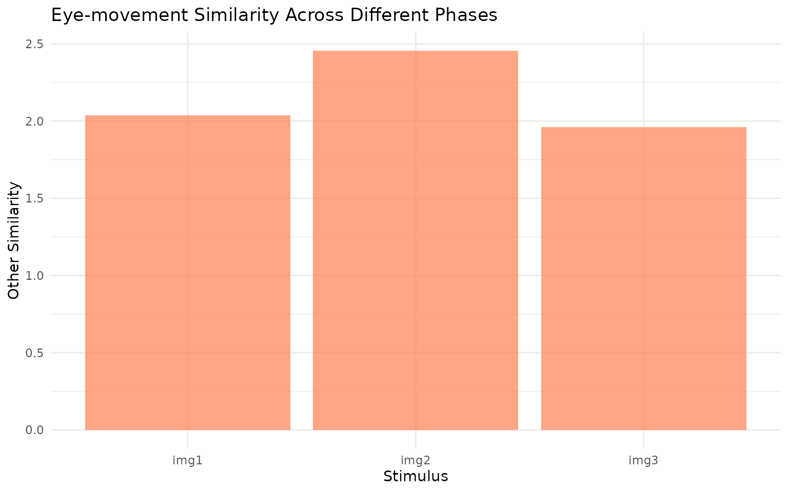

Repetitive Similarity
RepetitiveSimilarity.RmdRepetitive Similarity
The repetitive_similarity function computes eye-movement
similarity for datasets where the same stimulus is viewed multiple times
across experimental conditions. This is particularly useful for memory
experiments where images are presented during encoding and later during
retrieval phases.
Rather than comparing specific encoding-retrieval pairs, repetitive similarity examines all possible within-stimulus combinations across conditions and computes summary statistics (mean, median, etc.) to characterize the overall similarity pattern.
Example
Let’s simulate a simple dataset with images viewed during encoding and retrieval:
# Generate sample fixation data
gen_fixations <- function(imname, phase, trial, participant) {
nfix <- ceiling(runif(1) * 8) + 2 # 2-10 fixations
cds <- data.frame(x = runif(nfix) * 100, y = runif(nfix) * 100)
onset <- cumsum(runif(nfix) * 50)
data.frame(
x = cds$x, y = cds$y, onset = onset,
duration = c(diff(onset), 50),
image = imname, phase = phase,
trial = trial, participant = participant
)
}
# Create dataset: 2 participants, 3 images, encoding + retrieval
df <- lapply(c("s1", "s2"), function(snum) {
lapply(c("encoding", "retrieval"), function(phase) {
lapply(paste0("img", 1:3), function(img) {
gen_fixations(img, phase, img, snum)
}) %>% bind_rows()
}) %>% bind_rows()
}) %>% bind_rows()
# Create eye_table
eyetab <- eye_table("x", "y", "duration", "onset",
groupvar = c("participant", "phase", "image"),
data = df)
# Compute density maps
eyedens <- density_by(eyetab, groups = c("phase", "image", "participant"),
sigma = 50, xbounds = c(0, 100), ybounds = c(0, 100))Now compute repetitive similarity:
# Run repetitive similarity analysis
rep_sim <- repetitive_similarity(eyedens,
condition_var = "phase",
method = "pearson")
print(rep_sim)
#> # A tibble: 12 × 7
#> phase image participant fixgroup density repsim othersim
#> <chr> <chr> <chr> <list> <list> <dbl> <dbl>
#> 1 encoding img1 s1 <fxtn_grp [3 × 6]> <ey_dnsty [5]> 0.368 0.484
#> 2 encoding img1 s2 <fxtn_grp [6 × 6]> <ey_dnsty [5]> 0.591 0.413
#> 3 encoding img2 s1 <fxtn_grp [9 × 6]> <ey_dnsty [5]> 0.649 0.636
#> 4 encoding img2 s2 <fxtn_grp [7 × 6]> <ey_dnsty [5]> 0.683 0.510
#> 5 encoding img3 s1 <fxtn_grp [4 × 6]> <ey_dnsty [5]> 0.660 0.540
#> 6 encoding img3 s2 <fxtn_grp [3 × 6]> <ey_dnsty [5]> 0.748 0.643
#> 7 retrieval img1 s1 <fxtn_grp [5 × 6]> <ey_dnsty [5]> 0.533 0.626
#> 8 retrieval img1 s2 <fxtn_grp [8 × 6]> <ey_dnsty [5]> 0.220 0.514
#> 9 retrieval img2 s1 <fxtn_grp [7 × 6]> <ey_dnsty [5]> 0.557 0.685
#> 10 retrieval img2 s2 <fxtn_grp [9 × 6]> <ey_dnsty [5]> 0.388 0.625
#> 11 retrieval img3 s1 <fxtn_grp [3 × 6]> <ey_dnsty [5]> 0.189 0.482
#> 12 retrieval img3 s2 <fxtn_grp [3 × 6]> <ey_dnsty [5]> 0.238 0.294Visualization
# Plot the similarity results
ggplot(rep_sim, aes(x = image, y = repsim)) +
geom_col(fill = "steelblue", alpha = 0.7) +
labs(x = "Stimulus", y = "Repetitive Similarity",
title = "Eye-movement Similarity Within Phase") +
theme_minimal()
# Also plot other similarity
ggplot(rep_sim, aes(x = image, y = othersim)) +
geom_col(fill = "coral", alpha = 0.7) +
labs(x = "Stimulus", y = "Other Similarity",
title = "Eye-movement Similarity Across Different Phases") +
theme_minimal()
The repetitive_similarity function provides a
straightforward way to quantify how consistently participants look at
the same locations when viewing repeated stimuli across different
experimental phases.